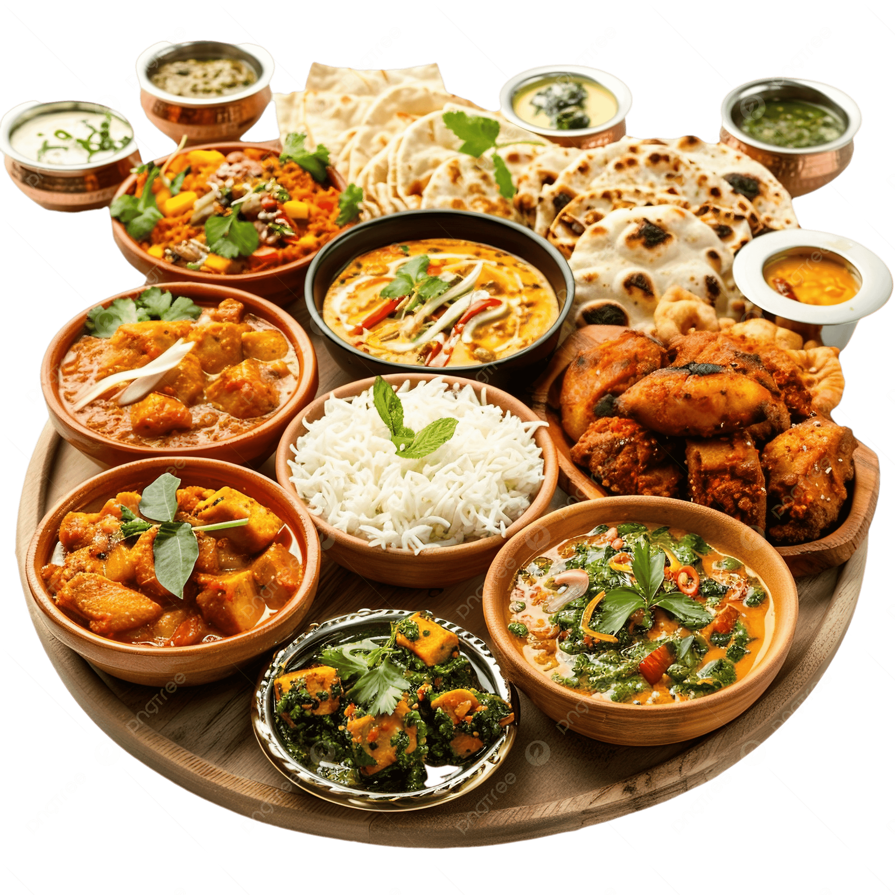
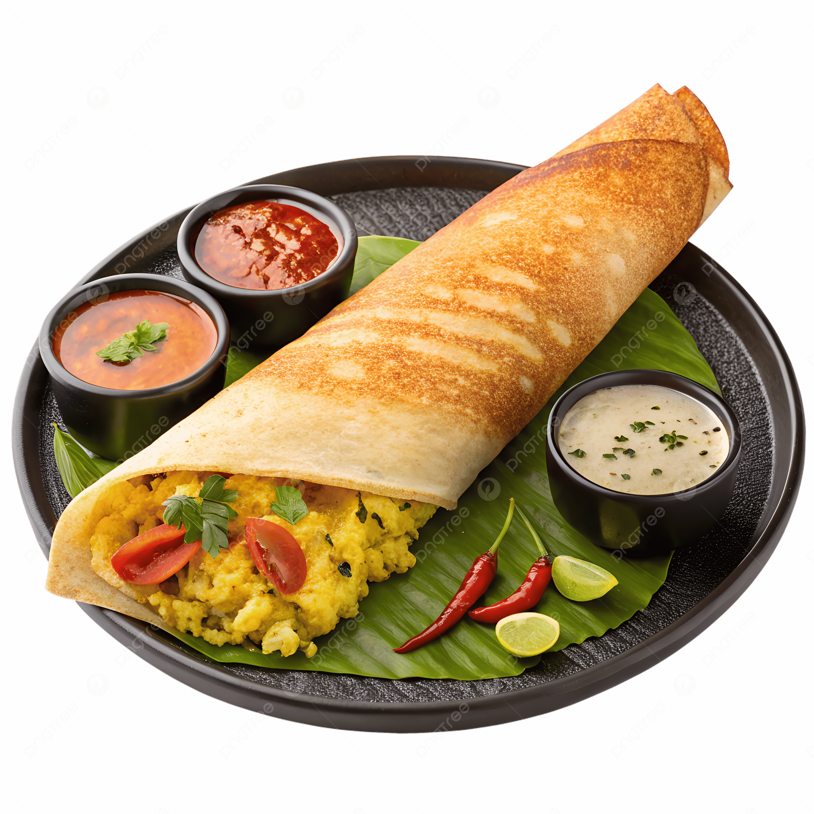
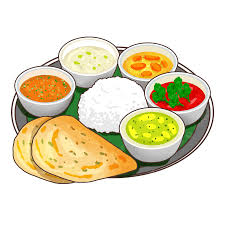
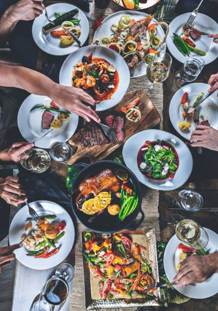
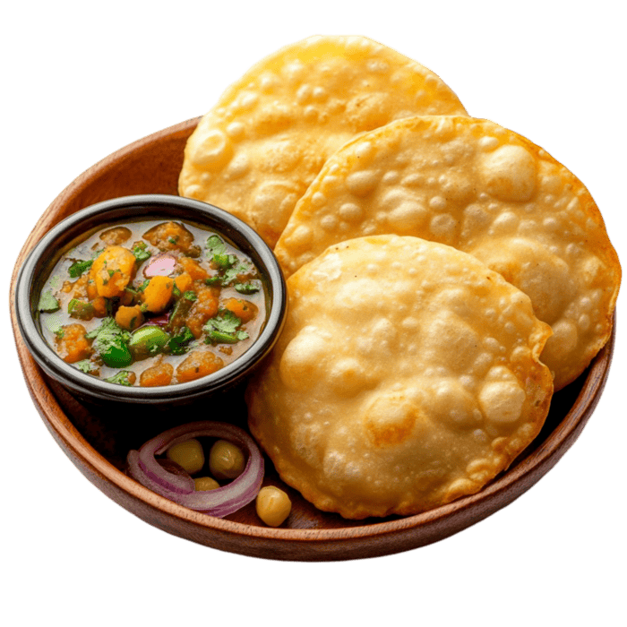
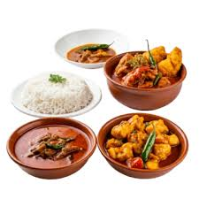

India is home to a rich variety of cuisines, each with its own unique flavors, ingredients, and cooking techniques. From the spicy curries of the south to the rich and aromatic dishes of the north, Indian cuisine is a celebration of diversity and tradition.
North Indian cuisine is known for its rich and hearty dishes, often featuring a variety of spices and dairy products. Popular dishes include butter chicken, naan bread, and biryani.
South Indian cuisine is characterized by its use of rice, lentils, and coconut. Dishes like dosa, idli, and sambar are staples in this region.
East Indian cuisine is known for its use of mustard oil, fish, and rice. Popular dishes include macher jhol (fish curry) and panta bhat (fermented rice).
West Indian cuisine is diverse, with influences from Portuguese, African, and indigenous cultures. Dishes like vindaloo, xacuti, and sorpotel are popular in this region.
Central Indian cuisine is known for its use of wheat, lentils, and dairy products Popular dishes include poha, dal bafla, and bhutte ka kees.
Bengali cuisine is famous for its use of mustard seeds, fish, and sweets. Popular dishes include shorshe ilish (hilsa fish in mustard sauce) and rasgulla (a sweet dessert).
